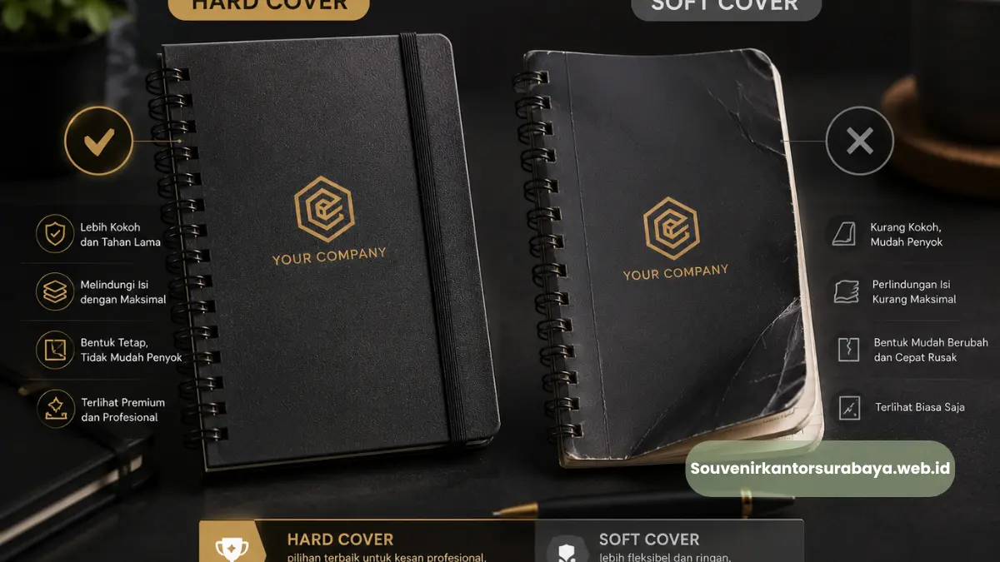
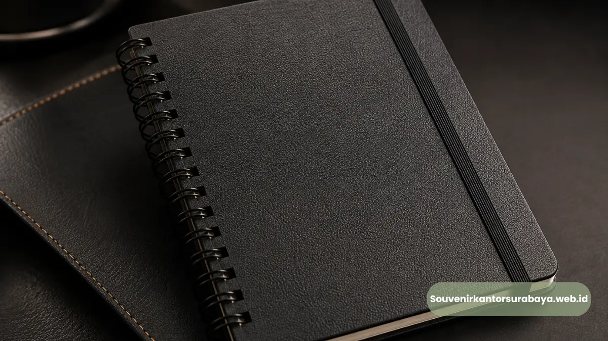
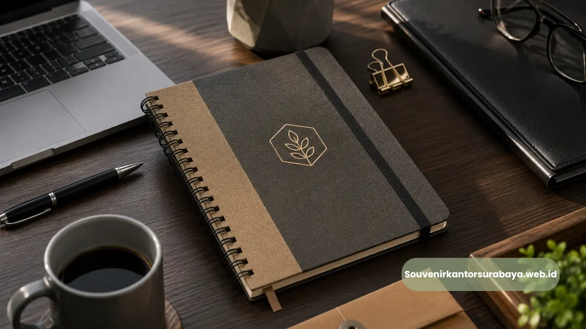
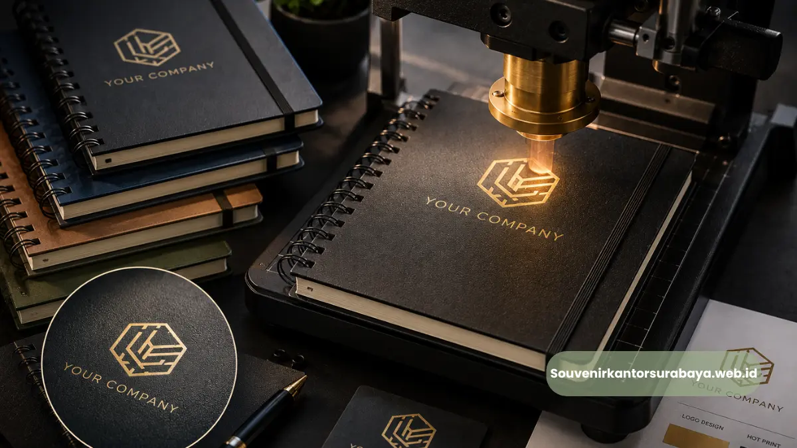
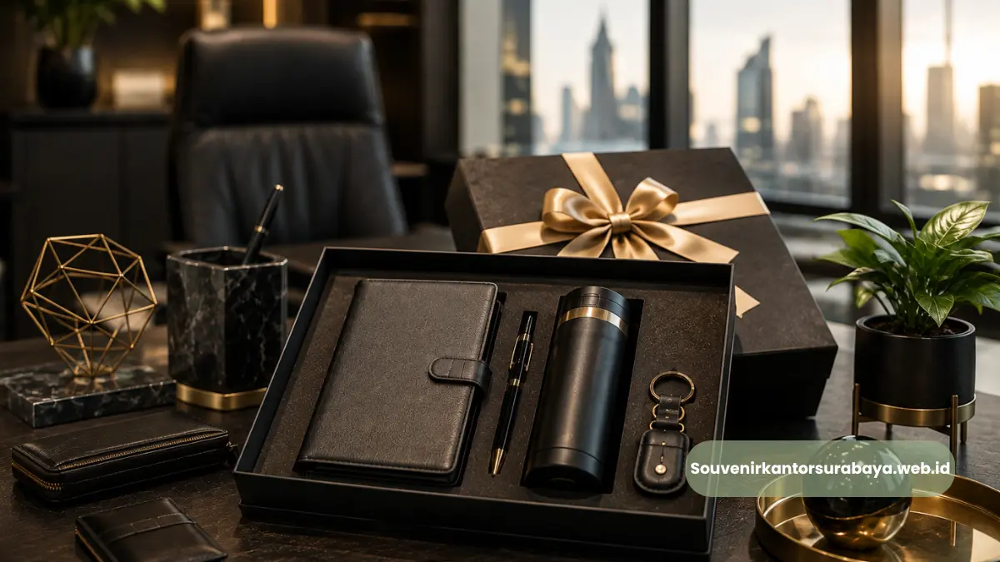

- Apa Kelebihan Hard Cover Dibanding Soft Cover untuk Kebutuhan Korporat?
- Apakah Hard Cover Cocok untuk Semua Jenis Acara Korporat?
- Bahan Apa Saja yang Umum Digunakan pada Cover Hard Case?
- Apakah Warna Cover Hard Case Bisa Disesuaikan dengan Brand Perusahaan?
- Apakah Hard Cover Lebih Tahan Lama untuk Pemakaian Sehari-hari?
Keunggulan Material Hard Cover Dibanding Notebook Biasa untuk Kebutuhan Korporat
Material hard cover pada block note memberikan ketahanan fisik lebih tinggi dan tampilan lebih profesional dibanding notebook softcover biasa, menjadikannya pilihan yang lebih bernilai untuk merchandise korporat jangka panjang. Perbedaan ini terletak pada struktur cover, jenis bahan pelapis, dan cara penjilidan yang digunakan.
- Hard cover menggunakan karton tebal berlapis bahan leatherette atau kulit sintetis
- Struktur cover lebih kaku sehingga tidak mudah bengkok atau rusak saat dibawa
- Kombinasi hard cover dan spiral binding memudahkan halaman dibuka rata
- Material hard cover lebih tahan terhadap goresan dan kelembapan ringan
- Tampilan premium mendukung kesan profesional saat digunakan di lingkungan bisnis
Apa Kelebihan Hard Cover Dibanding Soft Cover untuk Kebutuhan Korporat?
Hard cover memiliki struktur yang lebih kaku dan tahan lama dibanding soft cover, sehingga lebih cocok digunakan sebagai merchandise korporat yang sering dibawa bepergian atau digunakan dalam jangka waktu panjang. Ketahanan fisik ini menjadi nilai tambah penting dalam konteks branding perusahaan.
Soft cover pada umumnya menggunakan bahan kertas tebal atau karton tipis yang lebih fleksibel namun rentan melengkung, terlipat, atau rusak jika sering dimasukkan ke dalam tas bersama barang lain. Sebaliknya, hard cover dibuat dari lapisan karton tebal yang dilapisi bahan sintetis, memberikan perlindungan lebih baik terhadap tekanan fisik maupun benturan ringan selama penggunaan sehari-hari.
Selain aspek ketahanan, hard cover juga memberikan permukaan yang lebih stabil dan rata untuk mencetak logo atau elemen branding lain, sehingga hasil cetak terlihat lebih rapi dan tahan lama dibanding pada permukaan soft cover yang cenderung lebih lentur.
Apakah Hard Cover Cocok untuk Semua Jenis Acara Korporat?
Hard cover umumnya cocok digunakan pada berbagai jenis acara korporat, mulai dari rapat formal, seminar, hingga corporate gift untuk klien, karena tampilannya yang profesional dan daya tahan yang mendukung penggunaan jangka panjang.
Baca Juga
Bahan Apa Saja yang Umum Digunakan pada Cover Hard Case?
Bahan yang paling umum digunakan pada cover hard case adalah leatherette atau kulit sintetis, yang memberikan tekstur menyerupai kulit asli namun dengan biaya produksi yang lebih terjangkau dan perawatan yang lebih mudah.
Leatherette dipilih karena kombinasi antara tampilan premium dan daya tahan terhadap goresan ringan maupun paparan kelembapan sehari-hari. Bahan ini juga tersedia dalam berbagai warna dan tekstur, mulai dari permukaan polos hingga bertekstur timbul, sehingga dapat disesuaikan dengan identitas visual perusahaan. Di bawah lapisan leatherette, biasanya terdapat karton tebal sebagai struktur utama yang memberikan kekakuan pada cover, memastikan notebook tetap terlihat rapi meskipun sering digunakan.

Untuk bagian isi, kertas yang digunakan pada block note korporat umumnya memiliki gramasi yang cukup tebal agar tidak mudah tembus tinta, sehingga nyaman digunakan untuk mencatat dengan berbagai jenis alat tulis, baik pulpen maupun spidol tipis.
Apakah Warna Cover Hard Case Bisa Disesuaikan dengan Brand Perusahaan?
Bisa, warna cover hard case umumnya tersedia dalam beberapa pilihan standar, dan beberapa layanan percetakan juga menyediakan opsi penyesuaian warna lebih lanjut agar selaras dengan identitas visual perusahaan.
Apakah Hard Cover Lebih Tahan Lama untuk Pemakaian Sehari-hari?
Secara umum, hard cover lebih tahan lama dibanding soft cover untuk pemakaian sehari-hari karena strukturnya yang lebih kaku dan mampu melindungi halaman isi dari kerusakan akibat tekanan atau benturan ringan selama mobilitas kerja.
Ketahanan ini juga berdampak pada efektivitas branding, karena semakin lama notebook digunakan, semakin lama pula logo perusahaan terus terlihat oleh pengguna maupun orang di sekitarnya, baik di lingkungan kantor maupun saat pertemuan dengan klien.
Material hard cover memberikan nilai lebih dibanding soft cover dalam hal ketahanan fisik, tampilan profesional, dan daya guna jangka panjang, menjadikannya pilihan yang lebih strategis untuk merchandise korporat. Pemilihan bahan leatherette berkualitas turut mempengaruhi kesan premium dari notebook yang diberikan kepada klien maupun karyawan.
Dapatkan block note spiral hard cover dengan material premium untuk kebutuhan perusahaan Anda melalui souvenir kantor surabaya. Kunjungi souvenirkantorsurabaya.web.id untuk konsultasi pilihan material dan pemesanan.

Hawa Nadira
Tim penulis CorporateGifts ID berfokus pada strategi souvenir kantor, merchandise korporat, dan inovasi brand untuk klien B2B.
Keahlian: Branding perusahaan, produksi souvenir, paket event, desain materi promosi.
Artikel Terkait

Block Note Spiral Hard Cover Perusahaan Surabaya Premium
Block note spiral hard cover perusahaan Surabaya adalah buku catatan bersampul keras custom logo premium untuk merchandise korporat.
Baca Selengkapnya
Custom Logo Block Note Spiral Hard Cover untuk Branding Perusahaan
Proses mencetak identitas visual perusahaan pada cover notebook menggunakan teknik hot print, sablon digital, atau UV printing.
Baca Selengkapnya
Souvenir Kantor Surabaya
Panduan komprehensif memilih souvenir kantor berkualitas tinggi untuk meningkatkan brand awareness dan hubungan bisnis.
Baca Selengkapnya